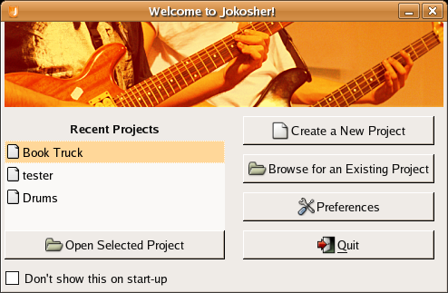
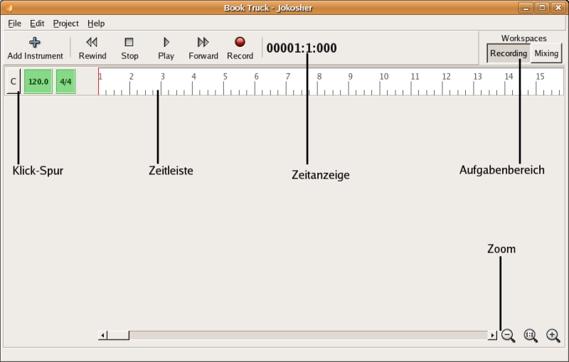
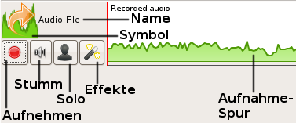
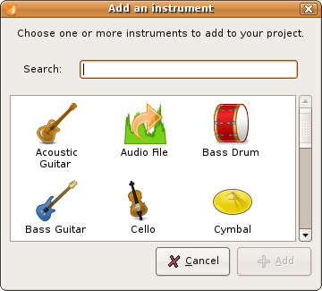
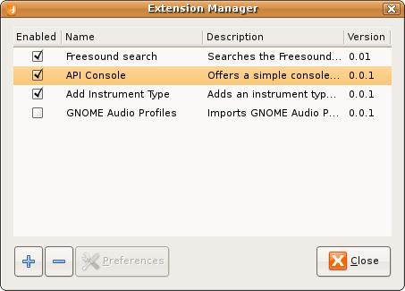

Jokosher Handbuch
- Von:
- Jono Bacon jono@jonobacon.org
- Jeff Ratliff jefrat@gmail.com
- Dennis Lichtenthäler dennis.lichtenthaeler@episode-iv.de
- Übersetzung:
- Dennis Lichtenthäler dennis.lichtenthaeler@episode-iv.de
Version 0.2 für Jokosher v0.2
Diese Anleitung steht unter der GNU General Public License, version 2.
Sie darf im Rahmen dieser Lizenz weiterverbreitet, kopiert und verändert
werden. Wenn etwas hier falsch aussieht oder besser erklärt werden könnte
würden wir uns über die Änderungen freuen. Aktuelle Informationen findest du
auf der Jokosher Dokumentations-Seite.
Du kannst auch direkt auf der Benutzerdoku-Seite
Kommentare zu diesem Handbuch abgeben, Fehler verbessern oder sogar eigene
Anleitungen schreiben.
INHALT
- Willkommen!
- Aller Anfang...
- Das Jokosher-Hauptfenster
- The Arbeitsbereiche
- Jokosher-Erweiterungen
- Effekte
Willkommen zum Beginn einer aufregenden Reise!
Jokosher ist ein einfach zu benutzendes, trotzdem aber verflucht leistungsfähiges
Open Source Audio-Werkzeug. Mit Jokosher kannst du Musik machen, aufnehmen und noch
viel mehr. Jokosher wurde entwickelt, um einfach benutzbar zu sein. Die Software soll
in den Hintergrund treten und es dir erlauben, dich auf dein Projekt zu konzentrieren.
Wir haben versucht, Jokosher so intuitiv wie möglich zu gestalten, aber natürlich ist
ein Handbuch immer hilfreich, um die Details zu erklären. Dies hier ist dieses Handbuch.
Jokosher ist ein organisches Stückchen Software, das allmählich wächst und verbessert wird.
Da es sich um Open Source-Software handelt, sind verschiedene Leute auf der ganzen Welt daran
beteiligt, Jokosher zum besten Werkzeug zur einfachen Erstellung von Audio und Musik zu machen.
Diese Anleitung spiegelt die Art der Jokosher-Entwicklung wider und wächst mit dem Projekt.
Dieses Dokument bietet eine komplette Anleitung zu allen Features und Funktionen von Jokosher.
Sobald eine neue Version am Horizont auftaucht, werden hier auch die grandiosen neuen Features
dieser Version erklärt.
Wie jedes andere Open Source-Projekt auch brauchen Jokosher und diese Anleitung deine Hilfe.
Leider wird die Dokumentation in den meisten Open Source-Projekten eher stiefmütterlich behandelt
und bleibt oft weit hinter der Anwendung zurück, die sie beschreiben soll. Wir wollen wirklich, wirklich,
wirklich nicht, dass das mit Jokosher auch passiert. Jokosher wurde vor allem für Musiker gemacht
und wir wollen, dass es klar und einfach zu benutzen ist. Dafür spielt diese Anleitung eine wichtige Rolle.
Wenn hier irgendetwas ungenau, veraltet oder einfach nicht richtig sein sollte, roll' die Ärmel hoch und
verbessere es. Auch das ist ein wichtiger Beitrag zu dem Projekt.
Starte Jokosher über Anwendungen->Sound & Video->Jokosher.
Direkt nach dem Start wirst du mit dem Willkommen-Fenster begrüßt (Grafik 2-1):

Grafik 2-1
Der Willkommen-Dialog
Dieser Dialog bietet verschiedene Möglichkeiten:
- Bisherige Projekte - diese Liste bietet einen einfachen Weg,
um auf deine zuletzt geöffneten Projekte zuzugreifen, wobei das oberste
Projekt das aktuellste ist. Um ein Projekt zu öffnen, klicke doppelt darauf.
- Neues Projekt erstellen - hier kannst du ein neues Jokosher-Projekt
erstellen. Mehr dazu unter Ein
neues Jokosher-Projekt erstellen.
- Bestehendes Projekt öffnen - hinter diesem Button verbirgt
sich ein Dialogfenster, mit dem du bestehende Projekte auf deinem Computer
suchen kannst. Mehr dazu unter Ein
Jokosher-Projekt öffnen.
- Einstellungen - über diesen Button gelangst du in das Einstellungsfenster
von Jokosher.
- Beenden - hiermit verlässt du Jokosher.
Da es manche Leute gibt, die solche Willkommens-Fenster wirklich hassen,
findest du unten am Rand eine schönen große "Nicht mehr beim Start anzeigen"-Checkbox.
Sobald du sie anklickst, wird dich das Willkommen-Fenster nie wieder belästigen. Es gibt
einige coole Möglichkeiten, die du am Jokosher-Start einstellen kannst. Mehr dazu unter
Jokosher konfigurieren.
Also, welche Option hast du ausgewählt? Gehen wir einfach mal alles der Reihe nach durch...
Du kannst ein Projekt erstellen, indem du entweder im Willkommen-Fenster auf Neues
Projekt erstellen klickst oder über Datei->Neues Projekt im Hauptfenster.
Nun erscheint ein Dialogfenster, in dem du nach einigen Details gefragt wirst:
- Projektname - hier kannst du deinem Projekt einen
Namen geben, wahrscheinlich den Song- oder Podcast-Titel.
- Ordner - wähle hier den Ordner aus, in dem dein
Projekt gespeichert werden soll. Für dein Projekt wird dann darin
wiederum ein neuer Ordner angelegt. Wenn du also zum Beispiel hier
/home/bob/projekte auswählst und deinem Projekt den Namen "Booya"
gibst, wird im Ordner /home/bob/projekte ein Ordner Booya erstellt.
- Autor - gib hier deinen Namen oder den Namen deiner
Band an.
Wenn du alle Felder ausgefüllt hast, klicke zum Fortsetzen auf den OK-Button.
Wenn dies das erste Mal ist, das du Jokosher benutzt, findest du einen Überblick unter
Das Jokosher-Hauptfenster.
Du kannst ein bestehendes Projekt öffnen, indem du entweder im
Willkommen-Fenster auf Bestehendes Projekt öffnen klickst
oder im Menü des Hauptfensters Datei->Öffnen auswählst.
Wenn du diese Option auswählst, erscheint ein Gnome-Dialog zur Dateiauswahl.
Jokosher-Projekte werden in einem Verzeichnis mit dem Namen des Projektes gespeichert.
In diesem Verzeichnis befindet sich eine .jokosher-Datei, die du per
Doppelklick laden kannst.
Wenn dies das erste Mal ist, das du Jokosher benutzt, findest du einen Überblick unter
Das Jokosher-Hauptfenster.
Das Jokosher-Hauptfenster ist der Ort, an dem all die spannenden Dinge passieren (Grafik 3-1):

Grafik 3-1
Das Jokosher-Hauptfenster
Im Gegensatz zu den vielen anderen langweiligen und weniger grandiosen
Multitrack-Editoren bewirft dich Jokosher nicht mit Massen von winzigen Fensterchen.
Hier passiert alles in einem einzigen Window, wodurch es leicht ist,
auf einen Blick zu sehen, was gerade passiert.
Am Oberen Rand des Fensters findest du einige Menüs und darin praktisch alle Funktionen
von Jokosher. Wenn du partout nicht darauf kommst, wie irgendetwas funktioniert,
schau dich einfach in den Menüs um.
Datei
- Neu - erstellt ein neues Projekt. Wenn das aktuelle
Projekt verändert wurde, bekommst du die Möglichkeit, es
vorher abzuspeichern. Wie man einem Projekt ein Instrument hinzufügt,
steht im Bereich Instrumente hinzufügen.
- Öffnen - öffnet ein bestehendes Projekt. Wenn das
aktuelle Projekt verändert wurde, bekommst du die Möglichkeit, es
vorher abzuspeichern.
- Speichern - speichert das aktuelle Projekt. Diese Funktion
speichert dein komplettes Projekt, inklusive aller Änderungen, so dass
du diese über die Rückgängig-Funktion später zurücknehmen kannst.
- Speichern unter - funktioniert genau wie der vorherige Punkt,
lässt dich das Projekt aber unter einem anderen Namen abspeichern.
- Schließen - schließt das aktuelle Projekt, ohne Jokosher zu beenden.
Du bekommst auch hier die Möglichkeit, eventuelle Änderungen zu speichern.
- Bisherige Projekte - dieses Untermenü zeigt dir die letzten
acht Projekte, an denen du in Jokosher gearbeitet hast. Somit kannst du
bequem von einem ins andere Projekt wechseln.
- Projekt abmischen -
öffnet ein Dialogfenster, das den letzten Schritt deines Projektes
durchführt - das Abmischen. Wähle einen Namen für die Ausgabedatei,
einen Ort, an dem sie gespeichert werden soll und ein Ausgabeformat.
Jokosher wird dann das komplette Projekt abmischen und als einzelne
Audiodatei im gewählten Format abspeichern.
- Beenden - schließt Jokosher. Auch hier bekommst du die
Möglichkeit, eventuelle Änderungen noch zu speichern.
Bearbeiten
- Rückgängig - macht deine letzte Änderung rückgängig.
- Wiederherstellen - stellt die letzte Änderung wieder her,
die über Rückgängig zurückgenommen wurde.
- Ausschneiden - Entfernt das ausgewählte Objekt aus dem
Projekt und legt es in die Zwischenablage. Der bisherige Inhalt
der Zwischenablage wird ersetzt.
- Kopieren - Legt eine Kopie des momentan ausgewählten Objektes
in die Zwischenablage. Der bisherige Inhalt der Zwischenablage
wird ersetzt.
- Einfügen - fügt den Inhalt der Zwischenablage in das Projekt
ein. Mehr Informationen zum Ausschneiden, Kopieren und Einfügen
gibt es unter Editierfunktionen.
- Löschen - Löscht das ausgewählte Objekt und entfernt es aus dem
Projekt.
- Einstellungen - Öffnet das Fenster, in dem du
Jokosher konfigurieren kannst.
Projekt
- Instrument hinzufügen - alles dazu unter Instrumente hinzufügen
- Instrumententyp wechseln - ändert den Typ des ausgewählten Instruments. Wenn du zum Beispiel
einen Bass hinzugefügt hast und ihn später zu einem Schlagzeug machen möchtest, kannst du dies mit dieser
Funktion tun. Du kannst den Instrumententyp übrigens auch ändern, indem du direkt auf das Symbol des
Instruments klickst.
- Anschlüsse - In diesem Dialog
werden alle Instrumente des Projektes sowie alle Eingänge deiner Soundkarte aufgeführt.
Hier kannst du festlegen, welches Instrument mit welchem Eingang verbunden ist,
indem du in der Auswahlbox neben einem Instrument den gewünschten Eingang
auswählst.
- Zeitanzeige - Legt fest, ob die Zeitleiste in
Takten, Schlägen und Ticks oder Stunden, Minuten und Sekunden
angezeigt wird.
Erweiterungen
- Erweiterungen verwalten - öffnet den Erweiterungs-Manager, in dem du
Erweiterungen hinzufügen, entfernen und konfigurieren kannst. Mehr dazu unter
Jokosher-Erweiterungen.
Hilfe
- Aktuelle Informationen - Führt die wichtigsten Informationen
zu dieser Jokosher-Version auf.
- Mithelfen - Zeit dir, wie du bei der Entwicklung von
Jokosher helfen kannst. Jokosher ist noch in der Entwicklung und
wir können deine Hilfe bestimmt gebrauchen.
- Über
- Credits - Öffnet ein Dialogfenster, das die
vielen Helfer auflistet, die Jokosher ermöglicht haben.
- Lizenz - Die komplette Jokosher-Lizenz.
Unterhalb des Menüs findest du die Symbolleiste. Die Buttons hier sind groß
genug, damit du sie auch mit einer Gitarre vor der Brust über deinen Schreibtisch
gebeugt noch gut treffen kannst. Hier passieren einige interessante Dinge:
- Instrument hinzufügen - klicke auf diesen Button, um dem
Projekt ein Instrument hinzuzufügen. Mehr dazu unterInstrumente hinzufügen.
- Zurückspulen, Play, Vorspulen, Aufnehmen - diese Buttons sind
für die Steuerung von Wiedergabe und Aufnahme zuständig.
- Zeitanzeige - hier siehst du die momentane Position in deinem
Projekt. Die Zeit wird in Stunden, Minuten und Sekunden oder in
Takten, Schlägen und Ticks angezeigt, je nachdem, welches Zeitformat
du im Projekt-Menü ausgewählt hast.
- Arbeitsbereiche - mit Hilfe dieser Buttons kannst du zwischen den
zwei Aufgabenbereichen in Jokosher wechseln.
- Metronom - dieses Feature erzeugt ein regelmäßiges Klick-Geräusch,
das dir hilft, das Tempo zu halten. Du kannst die Geschwindigkeit (in
Schlägen pro Minute) sowie den Takt einstellen. Klicke einfach das
Symbol an, um das Metronom zu aktivieren. Du wirst dann während der
Aufnahme und der Wiedergabe das Piepen hören.
- Zeitleiste - diese Anzeige erlaubt es dir, auf einen Blick
zu sehen, in welchem Bereich des Projekt du dich befindest.
Die Leiste wird je nach deinem aktuell eingestellten Zeitformat
in Takten oder Sekunden aufgeteilt.
- Zoom - diese Buttons dienen dazu, Bereiche des Projektes
zu vergrößern und zu verkleinern und schnell durch das Projekt
zu navigieren. Die Minus- und Plus-Buttons vergrößern bzw.
verkleinern schrittweise die Anzeige deines Projektes. Der Regler
in der Mitte erlaubt es dir, schnell die Zoomstufe zu ändern.
Wenn das Projekt nicht vollständig auf den Bildschirm passt,
kannst du den sichtbaren Bereich mit den Scrollbalken links von
den Symbolen verschieben.
Das Jokosher Einstellungsmenü findest du unter Bearbeiten->Einstellungen.
Hier kann das Verhalten von Jokosher verändert werden. Die Einstellungen werden für
Jokosher selbst und nicht je Projekt gespeichert.
- Start - Hier kannst du auswählen, was Jokosher tun soll,
wenn es gestartet wird. Es gibt die folgenden Möglichkeiten:
- Willkommen-Fenster anzeigen - die
Standardeinstellung. Wähle diese Option, wenn
du bei jedem Jokosher-Start ein Projekt auswählen möchtest.
- Letztes Projekt öffnen - Mit dieser
Option wird das Willkommen-Fenster übersprungen und
direkt das zuletzt geöffnete Projekt geladen.
- Nichts öffnen - Diese Option bietet dir
die volle Kontrolle. Du kannst Projekte über das
Datei-Menü öffnen.
- Audioformat - Wählt aus, in welchem Dateiformat
Instrumente während der Aufnahme gespeichert werden.
- Ausgabegerät - Wählt das Audiogerät aus, das für
die Soundausgabe benutzt wird. Dies hängt von der
Hardware deines Systems ab - eventuell gibt es hier
nur eine Auswahlmöglichkeit.
Im Aufnahmebereich werden nur die Instrumente angezeigt. In diesem
Bereich wirst du die meiste Zeit mit dem Aufnehmen verbringen.
Beim Erstellen eines Projektes ist das Aufnehmen der erste Schritt.
Du wirst hier Instrumente hinzufügen - meistens nicht mehr als eines auf
einmal -, Audiomaterial für dieses Instrument aufnehmen, anschließend
das nächste Instrument hinzufügen und so weiter. Die Arbeit im Aufnahmebereich
läuft normalerweise folgendermaßen ab:
- Instrumente hinzufügen - Siehe Instrumente hinzufügen
weiter unten. Nachdem ein Instrument hinzugefügt wurde, siehst
du, dass es folgende Funktionen bietet (Grafik 4-1):

Grafik 4-1
Instrumenten-Funktionen
- Symbol - das Symbol, das du beim Erstellen
des Instrumentes ausgewählt hast.
- Name - du kannst den Namen des Instruments
ändern, indem du einfach darauf klickst. Es handelt sich
hier nur um eine Bezeichnung, mit der du das Instrument
leicht erkennen kannst, wenn du beispielsweise mehrere
Instrumente mit dem gleichen Symbol verwendest.
- Aufnehmen - durch diesen Button schaltest
du ein Instrument für die Aufnahme "scharf".
- Stumm - ist dieser Button angeklickt, ist das
Instrument bei der Wiedergabe nicht zu hören.
- Solo - das Gegenteil der Stumm-Funktion.
Ist dieser Button angeklickt, hörst du nur dieses Instrument
bei der Wiedergabe. Alle anderen Instrumente werden stummgeschaltet.
- Effekte - hier kannst du Effekte für dieses Instrument
konfigurieren. Mehr dazu unter Effekte.
- Aufnahmespur - rechts neben den Instrumentensymbolen
befindet sich die Aufnahmespur, in der das für dieses Instrument
aufgenommene Audiomaterial angezeigt wird.
- Anschlüsse festlegen - wie unter Instrumentenanschlüsse erklärt,
können die verschiedenen Eingänge an deiner Soundkarte verschiedenen Instrumenten
zugeordnet werden. So kannst du selbst bei nur einem Eingang alle Instrumente
nacheinander aufnehmen.
- Aufnehmen - jetzt ist alles bereit und du kannst
dein Instrument aufnehmen. Wenn es ein Live-Instrument ist,
schließe es an, klicke auf den "Scharfschalten"-Button beim
entsprechenden Instrument und klicke auf den Aufnehmen-Button in
der Symbolleiste. Nachdem du mit dem Aufnehmen fertig bist, klicke
auf den Stop-Button. Um eine bereits existierende Audiodatei
einzufügen, klicke mit der rechten Maustaste auf die Aufnahmespur
und dann auf Audiodatei importieren. Suche dir die Datei aus,
die du importieren möchtest und klicke dann auf Öffnen.
Die Audiodatei wird nun in das Instrument importiert.
So oder so befindet sich das Audiomaterial nun in der Aufnahmespur.
Die Wellenform zeigt dir die Lautstärke an jedem Punkt der Aufnahme.
- Und wieder von vorn... - entferne die Scharfschaltung von diesem
Instrument und beginne den Prozess wieder von vorn, indem du das nächste
Instrument hinzufügst - so lange, bis alle Instrumente aufgenommen sind.
Nachdem alle Instrumente aufgenommen sind, fängt die Nachbearbeitung an. Stelle
dir die Instrumente als Rohmaterial vor, das du zu einem fertigen
Projekt formen willst. Jokosher bietet einige Werkzeuge, um dir das Editieren
zu erleichtern:
- Verschieben - diese Funktion verschiebt einen Audioblock.
Klicke dazu den gewünschten Block an und ziehe ihn nach links oder
rechts, bis er sich an der gewünschten Position befindet. Wenn du
mehrere Instrumente aufnimmst, kann diese Funktion genutzt werden, um
die Instrumente miteinander zu synchronisieren.
Dies ist der Bereich zum Abmischen des Projektes. Hier werden
kleinere Versionen der Aufnahmespuren sowie Lautstärkeregler für
jedes Instrument angezeigt.
Viele Funktionen des Aufnahmebereichs sind auch hier
vorhanden. Der Schwerpunkt liegt hier aber darauf, die Balance
zwischen den Instrumenten einzustellen.
In diesem Bereich gibt es folgende Funktionen:
- Lautstärkeregler - jedes Instrument hat hier einen
eigenen Lautstärkeregler. Diese Regler kontrollieren die Gesamtlautstärke
dieses Instruments im finalen Mix. Die Lautstärke wird auf dem Regler als
Zahl zwischen 0 und 1,00 angezeigt. Wenn du die Lautstärke änderst,
bemerkst du dies sowohl hör- als auch sichtbar.
- Instrument verstecken - über jedem Lautstärkeregler findest
du ein Symbol, mit dem du das jeweilige Instrument verstecken kannst. Es
ist dann noch vorhanden, nur ausgeblendet. Ganz unten auf dem Bildschirm,
direkt über der Statusleiste gibt es einen Bereich namens
Versteckte Instrumente. Um ein Instrument wieder sichtbar zu machen,
klicke es einfach in dieser Liste an.
Diese Funktion ist sehr hilfreich, wenn du sehr viele Instrumente in einem
Projekt hast und nur an einigen arbeiten willst. Wenn du zum Beispiel drei
Gesangsstimmen hast, könntest du alle anderen Instrumente Stummschalten
und ausblenden, während du den Gesang abmischst.
- Gesamtlautstärke - ganz am rechten Rand des Bildschirms befindet sich
der Regler für die Gesamtlautstärke. Dieser Regler ändert die Lautstärke
des gesamten Projektes.
Instrumente sind ein wichtiges Konzept in Jokosher. Denke in
Instrumenten, nicht in Spuren oder Tracks. Instrumente erlauben es dir,
sofort einiges an einem Projekt auf den ersten Blick zu erkennen. Spuren
sind nur Spuren!
Im Moment sind Instrumente sehr einfach - sie enthalten nur ein
Symbol für das entsprechende Instrument. In der Zukunft werden wir auch
Audioeinstellungen pro Instrumententyp speichern. Wenn du zum Beispiel eine
Snare Drum aufnehmen willst, wird der Equalizer automatisch für eine
Snare Drum optimiert.

Grafik 4-3
Ein Instrument hinzuzufügen ist ganz leicht
Um ein Instrument hinzuzufügen, klicke auf den Instrument hinzufügen-Button
in der Symbolleiste. Wähle hier (Grafik 4-3) das Instrument, das dem, das du aufnehmen willst,
am nächsten kommt und klicke auf OK. Das war's!
Sobald ein Instrument angelegt ist, kannst du auch dessen Namen beliebig
verändern.
Jokosher bietet jetzt ein neues Feature: Erweiterungen. Nun können
Entwickler Jokosher um neue Funktionen erweitern, die Unterstützung für
weitere Dateitypen hinzufügen oder Dinge tun, die keiner von uns erwartet.
Die Erweiterungen kannst du im Erweiterungen-Menü konfigurieren.
Dieses Menü enthält zumindest den Punkt Erweiterungen verwalten, der den
Erweiterungs-Manager (Grafik 5-1) aufruft, kann aber auch noch - je nach installierten
Erweiterungen - zusätzliche Punkte beinhalten.

Grafik 5-1
Erweiterungs-Manager
Der Erweiterungs-Manager zeigt dir eine Liste aller installierten Erweiterungen.
Zusätzlich kannst du:
- Eine Erweiterung hinzufügen - installiert eine neue Erweiterung.
Dieser Punkt öffnet ein Auswahlfenster, in dem du eine
.py- oder
eine .egg-Datei auswählen kannst. Nachdem du bestätigt hast, dass
du diese Erweiterung wirklich installieren möchtest, solltest du sie in der
Liste der installierten Erweiterungen sehen.Mehr Informationen zu Erweiterungen
gibt es unter Neue Erweiterungen finden.
- Eine Erweiterung entfernen - löscht die momentan ausgewählte Erweiterung.
- Einstellungen - erlaubt es, die momentan ausgewählte Erweiterung
zu konfigurieren. Was hier konfiguriert werden kann, ist ganz Sache der
Erweiterung selbst. Bitte sieh bei Fragen in der entsprechenden Dokumentation nach.
- Schließen - schließt den Erweiterungs-Manager und bringt dich
in das Jokosher-Hauptfenster zurück.
Erweiterungen sind eine neue Funktion in Jokosher 0.2. Momentan verfügbare
Erweiterungen findest du auf unserer Entwicklerseite.
Melde dich im Jokosher-Forum an, um
Informationen zu Erweiterungen zu finden, Ideen für neue Erweiterungen zu diskutieren
oder zu veröffentlichen, an welcher Erweiterung du gerade arbeitest.
Wenn du eine Erweiterung schreiben möchtest, findest du eine komplette Dokumentation
des Erweiterungs-Systems auf der Entwicklerseite.
Mit Jokosher bist du in der Lage, Audio-Effekte auf einzelne Instrumente anzuwenden. Klicke
einfach auf den Effekte-Button auf dem gewünschten Instrument und das Effekte-Fenster
(Grafik 6-1) erscheint.

Grafik 6-1
Das Effekte-Fenster
Effekte hinzufügen - das Auswahlmenü links listet alle Effekte auf, die
auf deinem System installiert sind. Wähle dort den gewünschten Effekt aus und klicke
dann auf den Add-Button. Der Effekt wird dann dem Instrument hinzugefügt. So kannst
du so viele Effekte hinzufügen, wie du möchtest.
Effekteinstellungen ändern - nachdem du einen Effekt hinzugefügt hast, klicke doppelt
innerhalb der orangen Box. Es erscheint nun ein Fenster, in dem du diesen Effekt einstellen
kannst. Wie das Fenster aussieht, hängt vom speziellen Effekt ab. Klicke auf OK
wenn du fertig bist.
Effekte vorhören - Klicke auf den Play-Button unten im Effekte-Fenster
und das Instrument wird mit allen Effekten wiedergegeben, so dass du die Änderungen direkt
hören kannst.
Effekt-Vorlagen - Wenn du eine Gruppe von Effekten konfiguriert hast, die
du gerne wiederverwenden möchtest, kannst du sie als Vorlage speichern. Gib in dem
Vorlagen-Feld einen beliebigen Namen für diese Vorlage ein und klicke dann
auf Speichern. Wenn du das nächste Mal Effekte zu einem Instrument hinzufügen
möchtest, wirst du diese Vorlage in dem Auswahlmenü wiederfinden.
Effekte entfernen - um einen ungewünschten Effekt zu entfernen, klicke auf den roten
Kreis in der oberen rechten Ecke der entsprechenden orangen Box und der Effekt wird
entfernt. Du wirst nicht gefragt, ob du das wirklich willst - sei also vorsichtig dabei.